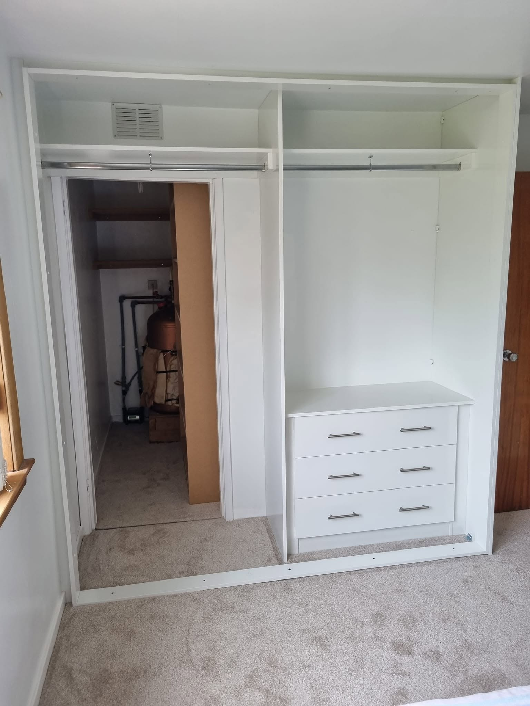
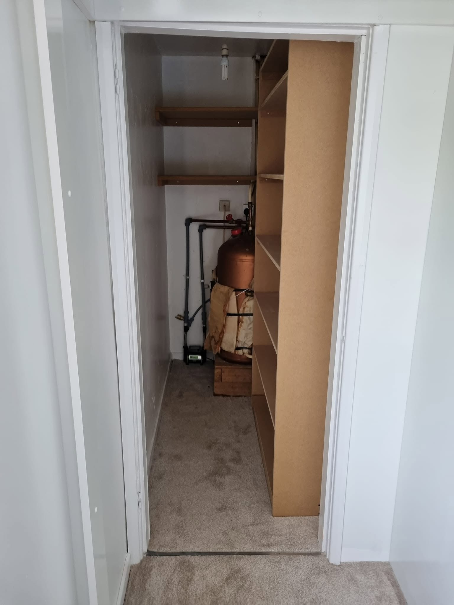

Turn a spare room, loft or the end of a large bedroom into a walk-in wardrobe designed entirely around how you dress and what you own — hand-built and fitted in Edinburgh.
A walk-in wardrobe is the most flexible storage there is. With the whole space to plan, we design open hanging, shelving, drawers, shoe storage and display around your routine — so getting dressed in the morning is calm rather than a rummage.
You don't need a mansion for one, either. A small box room, an under-used corner of a large bedroom or a loft conversion can all become a walk-in dressing area. We shape the layout to the room you have.
Period tenements, town houses and loft conversions across Edinburgh often have exactly the kind of awkward space a walk-in wardrobe puts to work — the room that's too small to be a proper bedroom, or the loft with sloping eaves nobody knows what to do with.


Because a walk-in wardrobe uses a whole room, layout is everything. We work through the plan with you first — where you hang, where you fold, where shoes and accessories live — so the finished space fits your habits, not a generic template.
Not enough room to give over entirely? A fitted wardrobe along one wall can hold a surprising amount, and sliding doors keep the floor clear in tighter rooms. Tell us about the space and we'll suggest the best approach.
Less than most people expect. A small box room, the end of a large bedroom or a loft can all become a walk-in wardrobe. We design the layout around whatever space and shape you have.
Yes — lofts are ideal. We build the runs and rails to follow the slope and put the awkward low areas to use, exactly where off-the-shelf units fall short.
We design the layout to suit lighting and plan for it as part of the build. The electrical connection itself is carried out by a qualified electrician.
Whatever you prefer. Many walk-ins mix open hanging and shelving with a few closed units or drawers for the things you'd rather keep out of sight. We plan the balance with you.
Tell us about the room and we'll come to you for a free, no-obligation design consultation across Edinburgh.